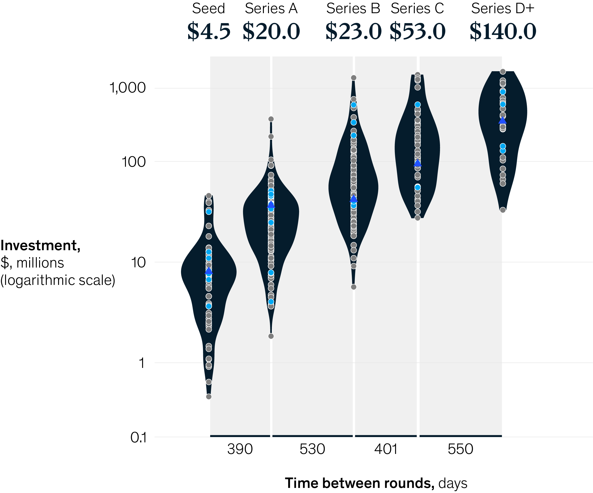
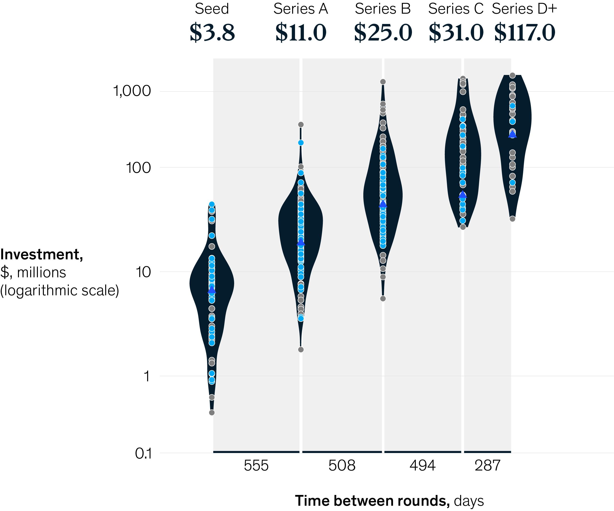

Achieving net-zero emissions in the Netherlands will require sustained efforts across numerous sectors.
Pace of required greenhouse-gas emission reduction per sector, 2019–50,
MtCO
1
2
e
2
200
180
160
140
100
80
60
40
0
20
–20
2020
2040
2030
2050
Industry
Power
3
Transport
Buildings
Agriculture
LULUCF
4
2050
2030
–99
–61
–100
–43
–100
–56
–100
–52
–77
–40
Sectors
Decarbonization vs 2019
Main drivers for 2030 reduction
~80% electrification of low- and medium-temperature combustion processes across the industry
Main decarbonization realized in steel, petroleum refining, and other chemicals
~35% reduction in barrels of oil refined
~80% of power supplied from renewables
Installed capacity of ~46 GW of solar, ~31 GW of offshore wind,
and ~7 GW of onshore wind
5
~25% of greenhouses heated
with district heating and ~20% with electric heat pumps
~40% of homes highly insulated, ~60% using gas boiler, ~20% with hybrid or electric heat pump, and ~15% on district heating
Implementation of modern farming practices
~60% of passenger car and van kilometers traveled with a battery electric vehicle
~40% of truck kilometers
traveled with an electric vehicle, with a minor uptake of fuel cell electric vehicles
Wetland emission reduction of ~1.75 MtCO
2
e
2
Note: Estimates shown here are based on McKinsey analysis of one possible 1.5°C emission-reduction scenario for the Netherlands and are subject to change according to the dynamic context of climate regulation, technology, demand, and macroeconomics observed today.
¹High level in line with remaining emissions per sector for 2030 according to Beleidsprogramma Klimaat (Climate Policy Program). Main differences in power are due to expected uptake of electrification in net-zero pathway; differences in transport are due to accelerated rollout of electric vehicles. Remaining emissions in 2050 will be offset by negative emission technologies to achieve net zero.
²Metric megatons of CO₂ equivalent.
³Includes waste management.
⁴Land use, land-use change, and forestry.
⁵This is 10 GW of additional offshore wind relative to coalition targets. See the chapter “Five green growth platforms for the Netherlands” for more information on this assumption.
Source: McKinsey Sustainability Insights
Hover for source information
McKinsey & Company
Replay Animation
Replay Animation
Agtech start-ups typically spend 15 to 20 months between funding rounds, with levels growing from a median of $3.5 million in the seed round to $65.0 million in series C.
Click on each category to learn more

C&A Pillar
Selected Pillar Company Measure
All other companies
Median


Source: PitchBook, McKinsey analysis
Overall
Alternative proteins
Bio/sustainable materials
Controlled-environment agriculture
Digital and precision agriculture
Sustainable inputs
Agtech start-ups typically spend 15 to 20 months between funding rounds, with levels growing from a median of $3.5 million in the seed round to $65.0 million in series C.
Click on each category to learn more
Selected Pillar Company Measure
All other companies
Median

Source: PitchBook, McKinsey analysis
C&A Pillar
Overall
Alternative proteins
Bio/sustainable materials
Controlled-environment agriculture
Digital and precision agriculture
Sustainable inputs
Agtech start-ups typically spend 15 to 20 months between funding rounds, with levels growing from a median of $3.5 million in the seed round to $65.0 million in series C.
Click on each category to learn more
Selected Pillar Company Measure
All other companies
Median

Source: PitchBook, McKinsey analysis
C&A Pillar
Overall
Alternative proteins
Bio/sustainable materials
Controlled-environment agriculture
Digital and precision agriculture
Sustainable inputs
Agtech start-ups typically spend 15 to 20 months between funding rounds, with levels growing from a median of $3.5 million in the seed round to $65.0 million in series C.
Click on each category to learn more
C&A Pillar
Selected Pillar Company Measure
All other companies
Median

Source: PitchBook, McKinsey analysis
Overall
Alternative proteins
Bio/sustainable materials
Controlled-environment agriculture
Digital and precision agriculture
Sustainable inputs
Agtech start-ups typically spend 15 to 20 months between funding rounds, with levels growing from a median of $3.5 million in the seed round to $65.0 million in series C.
Click on each category to learn more
C&A Pillar
Selected Pillar Company Measure
All other companies
Median

Source: PitchBook, McKinsey analysis
Overall
Alternative proteins
Bio/sustainable materials
Controlled-environment agriculture
Digital and precision agriculture
Sustainable inputs